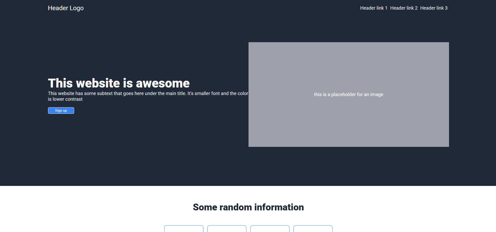
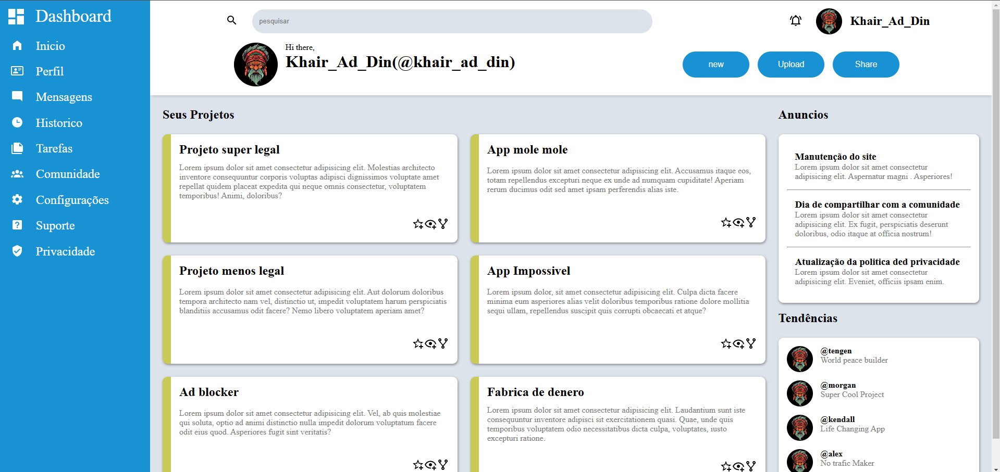
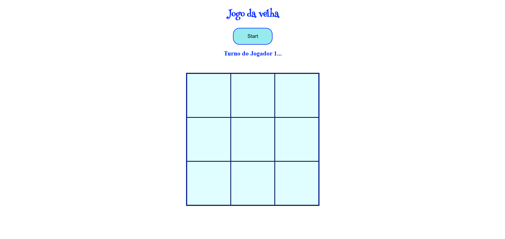
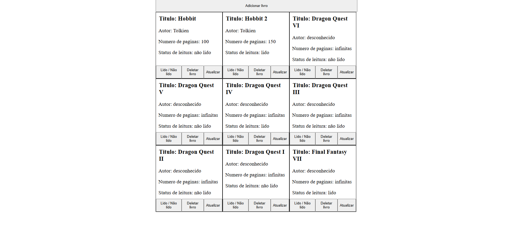
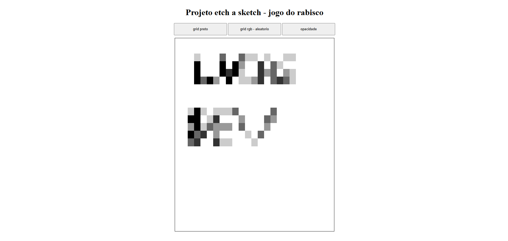
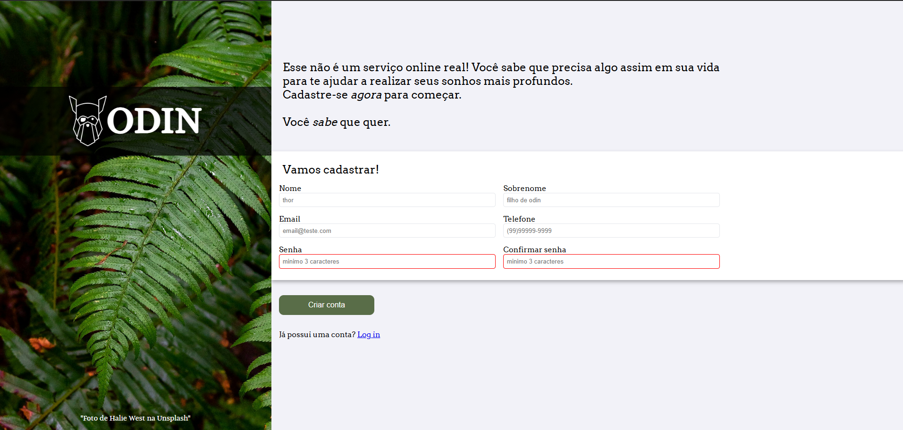

Sobre mim
Sou um aspirante a desenvolvedor Full Stack Web com paixão por criar soluções inovadoras para problemas do mundo real. Atualmente estudo na engenharia de software na Anhanguera e estou aprimorando minhas habilidades em desenvolvimento web. Tenho uma base sólida em HTML, CSS e JavaScript e tenho conhecimento no framework Laravel. Também estou familiarizado com Git e GitHub e tenho experiência em trabalhar com APIs. Aprendo rápido e trabalho bem em equipe, e estou sempre em busca de novos desafios que me ajudem a crescer como desenvolvedor.
Meus Projetos
Alguns dos projetos que podem ser achados no meu repositorio do github.
Landing page

Este é um projeto do The Project Odin criado usando flexbox a partir de um arquivo de design.
Admin Dashboard

Este é um projeto do The Project Odin criado usando grid e flexbox a partir de um arquivo de design.
Jogo da velha

Este é um projeto do The Project Odin criado em javascript com o proposito de praticar o uso de closures.
Biblioteca

Este é um projeto do The Project Odin de um app de uma biblioteca criado usando flexbox e Javascript.
Jogo do Rabisco

Este é um projeto do The Project Odin do jogo de desenhar - Etch a sketch usando css e Javascript
Pagina de formulario

Este é um projeto do The Project Odin criado usando flexbox a partir de um arquivo de design.